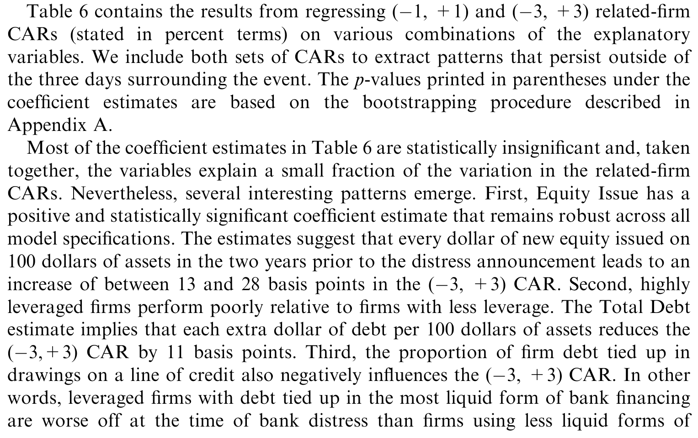
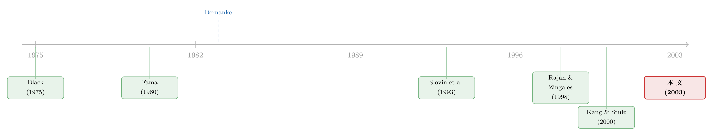

银行成片倒下，公司却几乎毫发无伤——挪威危机里的一个反常识
本文读的是 Ongena, Smith & Michalsen (2003, Journal of Financial Economics)：他们用 1988–1991 年挪威银行业的近乎崩塌做实验室，逐一测量「银行宣布陷入困境」这件事，到底把与它有关系的上市公司股价砸下去多少。结论出人意料——银行自己在事件窗口里平均跌掉 10.6%（三日 CAR），相关公司却只跌 1.7%，七日窗口甚至小幅转正到 +1.5%。当一个国家有足够发达的资本市场、又把控制权挡在银行门外时，「你的银行快倒了」对你来说，原来没那么可怕。
1 一个被反复讲述的恐怖故事
先讲一个几乎所有学过宏观金融的人都熟悉的故事。
1983 年，Bernanke 在那篇后来让他拿下诺奖的论文里说：大萧条之所以那么深、那么长，不只是因为货币紧缩，更因为银行成批倒闭——银行一倒，那些只能靠银行借钱的企业就被掐断了融资，实体经济跟着塌方。十年后，Slovin、Sushka 和 Polonchek（1993）找到了一个干净的微观证据：1984 年美国大陆伊利诺伊银行（Continental Illinois）濒临崩溃时，向它借钱的那些公司，股价应声大跌。再往后，整个 1990 年代日本的「失去的十年」，又被 Hoshi 与 Kashyap（2000）、Gibson（1995, 1997）、Kang 与 Stulz（2000）一篇篇地归因到同一条逻辑上：银行病了，借款企业跟着遭殃。
这条逻辑如此符合直觉，以至于它几乎成了金融危机叙事的默认设定：银行是企业融资链条上不可替代的一环，银行一旦失血，下游的公司无处可逃。
于是，一个自然的问题是——这条逻辑，普适吗？
它会不会只是某些特定金融体系（比如银行高度主导、且银行深度卷入公司治理的日本、韩国）的局部真相？如果换一个银行同样举足轻重、但资本市场更发达、法律又不让银行染指公司控制权的国家，结果会不会反过来？
要回答这个问题，你需要一场「足够大的银行灾难」，外加一个「足够干净的实验环境」。本文的三位作者，找到了挪威。
2 为什么是挪威：一间近乎完美的实验室
1988 年 3 月 18 日，挪威西部一家小商业银行 Sunnmørsbanken 发布盈利预警，宣布它已经亏光了全部股本。这是挪威银行业危机的第一声枪响。此后四年，13 家银行、占挪威商业银行总资产 95% 以上的机构，要么倒闭、要么严重受损；政府被迫关闭一家银行、救助一大批金融机构，包括挪威最大的三家商业银行。上市银行在 1988 到 1991 年间丢掉了 84% 的股权价值。
这是一场货真价实的系统性危机——按 Kindleberger（1996）那套「经典金融恐慌」的剧本演了一遍：1980 年代中期的金融自由化（displacement）点燃了一轮放贷狂潮（overtrading），随后油价骤跌、资产价值崩盘，大量弱质企业破产、拖垮了与它们绑在一起的银行，最后是全经济范围内的信贷收缩（revulsion）。
但作者真正看中挪威的，是它作为「实验室」的四个性质。这一节值得慢慢说，因为识别的全部干净程度，都压在这四点上：
第一，危机够大、够系统。 这保证了事件本身有足够的冲击力——如果连这种量级的银行崩塌都砸不动企业，那「银行不可替代」的说法就真的要打问号。
第二，挪威是个高度依赖银行的经济体。 1994 年，挪威企业的商业债务有 92% 是通过金融机构贷款筹集的；而且很多公司只跟一家银行打交道——平均每年有 74% 的样本公司只维持一段银行关系。这一点至关重要：它保证了作者测到的，正是企业主要的、甚至唯一的债务来源受损的冲击，而不是「众多银行之一打了个喷嚏」。
第三——也是我最欣赏的一点——因果方向是干净的。 危机里银行资产的恶化，主要来自小企业、未上市企业的成片破产（1986 年破产 1426 家，到 1989 年飙到 4536 家，集中在房地产、运输、建筑、零售、渔业、酒店餐饮），而不是作者研究的那些上市公司。换句话说，在危机爆发之初，样本里的上市公司是相对健康的。这就把那条最致命的反向因果——「是企业先垮了才拖垮银行」——挡在了门外。当 Sunnmørsbanken 宣布失血时，市场对相关上市公司股价的反应，可以相对干净地解读为「银行困境 → 企业」这一个方向的传导。
第四，挪威的公司治理结构，与日韩形成鲜明对照。 同样是银行主导信贷，但挪威的监管和法律把重要的控制权挡在银行手外，并且倾向于保护中小股东。这一点，最后会成为整篇文章「反转」的钥匙。
（关于「为什么有的国家天生靠银行、有的天生靠市场」这条更大的脉络，可参见《为什么英国人发债，德国人却找银行？——一道关于「要不要盯着你」的算术》。）
3 识别策略：把「银行困境」切成 13 声枪响
有了实验室，接下来是怎么测。作者用的是金融学里最朴素也最经得起推敲的工具——事件研究 (event study)。
逻辑链条是这样搭起来的。首先，得知道「谁是谁的银行」。挪威奥斯陆证券交易所（Oslo Stock Exchange, OSE）的上市规则要求每家公司每年申报自己的「主要」银行关系，最多四家，登在一本叫 Kierulfs 的手册里。作者就用这本手册，把每一家上市公司和它的银行，逐年连了起来。样本平均覆盖了 OSE 上 95% 的非银行上市公司。
接着，得有「银行困境」的精确时点。作者从危机相关的银行公告里，挑出每家银行第一次实质性披露困境的那一天作为事件日——通常是宣布巨额贷款损失、准备金不足或大额资本亏损。他们最终得到 13 个公告，再加上 1991 年 6 月 17 日挪威最大两家银行联合请求政府注资这一关键节点。剔除那些没有任何上市公司关系的困境银行之后，最终样本落到 5 家银行、6 个困境事件。1990 年，这 5 家银行与 108 家 OSE 上市公司有关系，占当时样本公司的 96%。
然后，把公司分成两组：在公告前一年的 Kierulfs 名单里列了这家困境银行的，叫「相关公司 (related firms)」；其余的同期公司叫「无关公司 (unrelated firms)」。六个事件加起来，作者拿到 217 个相关公司观测、443 个无关公司观测。
最后，对每家公司估出事件窗口里的累积异常收益 (cumulative abnormal return, CAR)。所谓异常收益，就是把实际收益里「市场本来就该有的那部分」扣掉之后，剩下的、可以归因于这桩事件的残差；把窗口内每天的异常收益加总，就是 CAR：
$$ \text{CAR}_i(t_1,t_2)=\sum_{t=t_1}^{t_2}\big(R_{i,t}-E[R_{i,t}]\big) $$
事件研究最迷人的地方在于：它不需要你相信任何宏大的结构模型，只需要一个对「正常收益」的基准，和一个干净的事件时点。作者也老老实实地说，他们的核心结果对基准的选择、对平均的方法都不敏感——这恰恰是一个稳健结论该有的样子。
4 反转：银行跌得鼻青脸肿，公司却若无其事
现在，把这台机器开起来，看读数。
银行那一头，符合所有人的预期。 在困境公告前后的三天窗口里，困境银行自己的平均 CAR 是 −10.6%；放宽到七天，是 −11.7%。市场毫不留情，而且这种下跌是永久性的——挪威银行的股票市值，直到 1997 年夏天才回到危机前的水平。
但真正关键的一步，是去看相关公司那一头的读数。如果 Bernanke、Slovin、日本那一整套故事是对的，这些把命脉系在困境银行上的公司，理应跟着大跌。
读数却是：相关公司的三日平均 CAR 只有 −1.7%，七日窗口甚至是 +1.5%。
于是反转出现了。同样一桩「你的主要银行快不行了」的消息，砸在银行自己身上是双位数的、永久的暴跌，砸在它的借款公司身上却只是个位数的、温和的、甚至会回弹的小波动。把视角再拉远一点，作者在文章开篇那张图里给了一个更震撼的对比：危机这几年里，挪威银行股指数跌了 84%，而 OSE 全体公司构成的市值加权组合反而涨了 63%，跑赢了同期美、英、德、日四国股市的加权平均。
这里要小心一个诱人的误读。「相关公司几乎没跌」不等于「银行困境对实体经济没有成本」。它说的是一件更精确的事：对于已经上市、相对健康、又能够触及资本市场的那批公司而言，失去一家银行的边际代价很小。那些真正被危机碾过的——成片破产的小企业、未上市企业——根本不在这个样本里。这是一篇关于「谁没被伤到」的论文，而不是「没有人被伤到」。
5 谁还是疼了：横截面里的「流动性」线索
如果平均效应这么小，那它是均匀地小，还是「有人没事、有人很疼」被平均成了小？
这是全文从「描述」走向「机制」的一步。作者用横截面回归 (cross-sectional regression)，把相关公司的异常收益，去解释为两类变量的函数：一类衡量公司对这家困境银行的依赖程度，另一类衡量公司动用替代融资的能力。
结论非常有「经济学味道」：
- 高杠杆、且已经把银行授信额度大量提走的公司，异常收益更低。 直觉是——这些公司已经把银行这口井打到见底，一旦银行收紧，它们既没有未动用的流动资金可取，也没有别的水源可换，自然最受伤。
- 在危机前刚发过股票的公司，异常收益更高。 因为它们手里捏着一笔刚从股权市场融来的现金，对那条正在断裂的银行信贷生命线，依赖度天然就低。
换句话说，真正决定一家公司疼不疼的，不是「它和困境银行关系有多深」，而是「它有没有别的地方可以拿到钱」。 拥有未动用银行额度、或刚补充过股本的公司，相对收益更高；缺少流动替代、又离不开银行的公司，才是被砸到的那一小撮。这恰好把第 2 节那个「资本市场是不是好替代品」的大问题，落到了一家家公司的资产负债表上。
下面这张表（表 6）就是这组回归的核心结果，因变量是相关公司在 (−1,+1) 与 (−3,+3) 两个窗口的 CAR。

Table 6: contains the results from regressing ((cid:1)1, +1) and ((cid:1)3, +3) related-firm
（这种「银行关系的价值，最终取决于借款人有没有替代选项」的思路，与《银行为什么舍得先亏本拉客？——把「关系」算进一国信贷的总账》是同一枚硬币的两面：关系在你别无选择时最值钱，也在那时最危险。）
6 那些没出现在样本里的公司：作者自己的「拷问」
一个聪明的读者读到这里，一定会皱眉：你的事件研究，只看了那些在危机期间还留在困境银行名单上的公司。可万一银行在危机里主动「甩」掉了一批烂客户呢？万一最该受伤的公司，恰恰因为提前被银行切断、或干脆退市，而落在了你的样本之外呢？如果是这样，你测到的小小的 −1.7%，就是被选择偏误 (selection bias) 系统性地洗白过的。
作者没有回避这一刀。他们专门去追踪了在困境公告前后那几年里离开困境银行的公司，观察它们的行为与业绩，看离开是不是「被赶走」、离开之后是不是表现更糟。总体上，他们没有找到选择偏误显著影响结论的证据。这一步不华丽，但很重要——它把「结论是不是样本筛出来的幻觉」这个最致命的质疑，正面接了下来。
7 文献脉络：从「银行不可替代」到「银行只是其中一种选项」
把这篇论文放回它的谱系里，你会看到一场持续了几十年的拉锯。
最早的一极，是「银行特殊论」：Bernanke（1983）从大萧条里读出银行崩塌对实体经济的独立伤害，Slovin et al.（1993）用大陆伊利诺伊银行给出微观佐证，而 1990 年代的日本研究——Gibson（1995, 1997）、Kang 与 Stulz（2000）、Yamori 与 Murakami（1999）——则几乎众口一词地确认：银行受损，借款企业跟着遭殃（Yamori 与 Murakami 测到主办银行倒闭带来 −6.6% 的三日 CAR；Bae et al. 2002 在韩国测到 −4.4%；Djankov et al. 2000 在东亚测到 −3.9%）。
另一极，是「银行可替代论」：Black（1975）、Fama（1980）、King 与 Plosser（1984）认为银行提供的服务并没有什么神奇之处，银行健康与经济活动的相关性，因果方向甚至可能是反过来的。Rajan 与 Zingales（1998）、Greenspan（1999）则给出了一个更精细的版本——一个国家越是拥有发达的资本市场，它的借款人就越能在银行停止放贷时找到好的替代品，金融危机对实体的冲击也就越被缓冲。

本文站在第二极，但它的贡献不是「站队」，而是提供了一个能把两极调和起来的边界条件。日本、韩国为什么测出大效应？挪威为什么测出小效应？作者在文章结尾给出的解释正是第 2 节埋下的伏笔：挪威有发达的资本市场作替代，又有法律把控制权挡在银行手外，所以银行困境的「关系租金」损失很小；而在银行深度嵌入公司治理、控制权高度集中于银行的体系里，丢一家银行才是真正的伤筋动骨。银行重不重要，取决于金融体系的形状。
8 评论与延伸（Q&A + 研究方向）
(a) 几个可能的疑问
Q：相关公司只跌 1.7%，会不会只是因为市场早就 price in 了银行的困境，事件日没新东西？
作者对此有防备。他们特意论证了挪威政府的应对在事前是不可预测的：挪威自 1923 年起就没有银行倒闭，政府长期对存款保险采取「不插手」态度，连银行业自己都公开表示不需要、甚至不欢迎国家干预。换言之，每一次困境公告都携带了真实的、难以提前预判的信息含量，事件日并非「靴子早已落地」。
Q：5 家银行、6 个事件，样本是不是太小，统计上靠得住吗？
事件数确实少，这是事件研究在「国别危机」场景下的天然约束。但作者用了
217个相关公司观测，并强调结果对基准、对平均方法、对各种稳健性检验都不敏感。更重要的是，量级上的对比（银行−10.6%vs 公司−1.7%）极其悬殊，这种数量级差距不太可能是小样本噪声制造出来的。
Q：这和「银行关系毫无价值」是不是一回事？
不是。横截面回归恰恰说明关系是有价值的——高杠杆、重度动用授信、又缺乏替代的公司确实被砸到了。论文真正的命题是：当替代融资可得时，单家银行关系的边际价值很小。价值没消失，只是被资本市场稀释了。
Q：为什么挪威结果和日韩相反，能排除只是「危机性质不同」吗？
不能完全排除，这是诚实的边界。作者给的解释是制度差异（资本市场发达 + 控制权不在银行手中），但日韩危机在宏观成因、企业治理、危机深度上都与挪威不同，单凭跨国比较无法把「制度」从「危机类型」里干净地剥离。这更像是一个有说服力的叙事，而非被识别出来的因果。
Q：把「相关」定义为「公告前一年名单上有这家银行」，会不会太机械？
作者自己也意识到了，并检验了估计对这一假设的敏感性。真正的隐患不在定义本身，而在「名单是年度申报的」——如果一家公司在年中悄悄换了银行，年度快照会有滞后。不过考虑到挪威企业普遍只有一家银行、关系黏性强，这种错配的影响有限。
Q：股票价格反应小，能等同于「实体成本小」吗？投资、就业呢？
这是本文最大的留白。股价反应衡量的是上市、健康、可触及资本市场那批公司的福利变化；而危机真正的实体代价（成片破产的小企业、失业）发生在样本之外。所以「总量影响小」这个结论，严格说只对挪威经济中被 OSE 覆盖的那一段成立。
(b) 几个可能的研究问题与提案
1. 把「银行困境 → 公司」搬到公司债市场。 - 【经济故事】本文看的是借款企业的股票反应，而股东是剩余索取权人。但银行困境对一家公司债务的影响可能完全不同——如果银行被迫贱卖贷款、或收紧续贷，公司债的信用利差应当先动。股与债的反应差异，本身就是一个关于「谁承担了银行困境成本」的分配问题。 - 【可行性】中。需要把银行困境事件对齐到有公开债的借款人，用 TRACE 之类的成交数据测事件窗口的利差变化。难点是同时有银行关系数据和债券交易数据的样本不大；识别上可借鉴本文「因果方向干净」的危机设定。
2. 外资银行 vs 本土银行困境的差异化冲击。
- 【经济故事】挪威危机前夕刚放开外资银行进入。如果一家公司的主要关系是外资银行，它在本土系统性危机中的暴露，理论上应当更低（外资行的命脉不在挪威）。这能把「银行困境冲击」进一步拆成「系统性 vs 特异性」两块。
- 【可行性】中高。Kierulfs 数据里区分了 24 家挪威商业银行、15 家国际商业银行、17 家储蓄银行，天然带着外资标签，可直接做交互项。样本量是约束。
3. 用「未动用授信额度」作为流动性保险的一般性度量。 - 【经济故事】本文发现「有未动用银行额度」的公司在危机中相对收益更高。这其实是把信用额度当成了一份流动性保险。一个自然的延伸：在更大样本里，未动用额度对危机期间股票回报的保护作用有多强、定价是否正确？这与近年公司债流动性危机的研究直接相关。 - 【可行性】高。Capital IQ / 10-K 里有信用额度动用数据，可在 2008 或 2020 的危机窗口上复制本文的横截面逻辑。（与《差点死掉的那个市场：一场公司债流动性危机的微观解剖》的关切相通。）
4. 法律对银行控制权的限制，是不是「关系成本」高低的真正调节变量？ - 【经济故事】作者把挪威与日韩的差异归到「控制权不在银行手中」。这个命题可以被正面检验：在一个跨国面板里，用各国「银行可持有公司股权 / 进入董事会」的法律强度，去解释银行困境事件对借款企业股价冲击的大小。 - 【可行性】低到中。需要拼出多国的银行困境事件 + 借款关系 + 法律指标，数据工程量巨大，且事件可比性难保证；但若能做成，是对本文核心叙事最直接的因果检验。
9 我的判断
这篇论文最让我佩服的，是它的克制。它没有去追一个惊天动地的大效应，反而把一个「几乎为零」的结果讲得既可信又有分量——而要让「零」变得可信，比让「显著」变得可信难得多。作者靠的是把识别的每一个薄弱环节（反向因果、选择偏误、事件信息含量、相关性定义）都逐一堵上，这是教科书级的事件研究手艺。它真正的贡献，是把「银行重不重要」这个常被一刀切的问题，改写成了「在什么样的金融体系里、对什么样的公司、银行才重要」。
我对识别的主要保留，仍在第 8 节那两点：一是 5 家银行 6 个事件的样本太薄，跨国对比（挪威 vs 日韩）虽有说服力却无法把「制度」与「危机类型」干净分离；二是股价反应只覆盖了能触及资本市场的健康上市公司，把危机真正的实体代价（小企业破产、失业）系统性地排除在了镜头之外——所以「总量影响小」这句话，需要被小心地限定在它的样本边界之内。
如果让我点后续最想看到的，是把这套设计搬到债务一侧：当银行陷入困境时，它的借款人付出的不是股价，而是更贵的续贷、更短的期限、被贱卖的贷款。股东也许真的若无其事，但债权人和那些拿不到替代融资的边缘公司，恐怕讲的是另一个故事。
参考文献
Bae, K. H., Kang, J. K., Lim, C. W. (2002). The value of durable bank relationships: evidence from Korean banking shocks. Journal of Financial Economics 64, 181–214.
Bernanke, B. S. (1983). Nonmonetary effects of the financial crisis in the propagation of the Great Depression. American Economic Review 73, 257–276.
Black, F. (1975). Bank funds management in an efficient market. Journal of Financial Economics 2, 323–339.
Djankov, S. D., Jindra, J., Klapper, L. (2000). Corporate valuation and the resolution of bank insolvency in East Asia. Working paper, World Bank.
Fama, E. F. (1980). Banking in the theory of finance. Journal of Monetary Economics 6, 39–57.
Gibson, M. S. (1995). Can bank health affect investment? Evidence from Japan. Journal of Business 68, 281–308.
Kang, J. K., Stulz, R. M. (2000). Do banking shocks affect borrowing firm performance? An analysis of the Japanese experience. Journal of Business 73, 1–24.
Kindleberger, C. P. (1996). Manias, Panics and Crashes: A History of Financial Crises. MacMillan, London.
Ongena, S., Smith, D. C. (2001). The duration of bank relationships. Journal of Financial Economics 61, 449–475.
Ongena, S., Smith, D. C., Michalsen, D. (2003). Firms and their distressed banks: lessons from the Norwegian banking crisis. Journal of Financial Economics 67, 81–112.
Rajan, R. G., Zingales, L. (1998). Which capitalism? Lessons from the East Asian crisis. Journal of Applied Corporate Finance 11, 40–48.
Slovin, M. B., Sushka, M. E., Polonchek, J. A. (1993). The value of bank durability: borrowers as bank stakeholders. Journal of Finance 48, 289–302.
Yamori, N., Murakami, A. (1999). Does bank relationship have an economic value? The effect of main bank failure on client firms. Economics Letters 65, 115–120.